European palaeoecological pioneers in Minnesota 1958–1968
by John Birks
During his PhD studies in New Mexico in the early 1940s, Herb Wright developed a keen interest in lakes and their sediments as a potential source of information for inferring relative chronologies and vegetational, environmental, and climatic history. His initial awareness of the potential of pollen analysis in reconstructing landscape and climatic history probably came from his Harvard mentor Kirk Bryan Sr (1888–1950) who closely followed the ever-growing European literature on pollen analysis and climatic history in the 1940s. Herb’s interest was further stimulated by Edward S Deevey (1914 – 1988) with the publication of his masterly review of Pleistocene biogeography (Deevey 1949), by his own geo-archaeological research in the Near East and studies on the glacial history of Minnesota in the early 1950s, and by his visits to the leading European centres for Quaternary geology and for pollen analysis. Herb met many of the leaders in European pollen analysis in the 1950s including Johannes (Johs) Iversen (1904–1972) and Svend Th Andersen (1926–2009) in Copenhagen, Tage Nilsson (1905–1986) in Lund, Gunnar Erdtman (1897–1973) in Stockholm, Knut Fægri (1909–2001) in Bergen, Max Welten (1904–1984) in Bern, Franz Firbas (1902–1964) in Göttingen, and Harry Godwin (1901–1985) in Cambridge.
Thanks to a grant from the Hill Family Foundation in St Paul in 1956, Herb was able to establish in 1958 a pollen laboratory within the then Department of Geology, University of Minnesota. As Herb admitted (Wright, unpublished ‘Wengen’) “Not being an avid microscopist, I called upon experienced European specialists to establish a pollen laboratory at Minnesota and to help in advising students”. Herb explained “In order to introduce new ideas and well-trained specialities to the activities of the Limnological Research Center (LRC), policy of inviting post-doctoral research fellows and research associates for 1–2 years has been followed. Many of these persons come from active laboratories in foreign countries. Several have returned for subsequent visits and have maintained joint research projects” (Wright 1969). This account is about the thirteen European specialists who worked for a year or more in the laboratory at Herb’s invitation between 1958 and 1968 – the palaeoecological ‘pioneers’.
The first members of the embryonic pollen laboratory were Herb and two graduate students Edward (‘Ed’) J Cushing who joined in 1956 and John (‘Jock’) H McAndrews who joined in 1957, along with one Leitz microscope and a minute preparation laboratory.
| 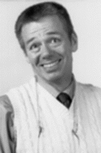 | 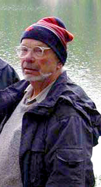 | 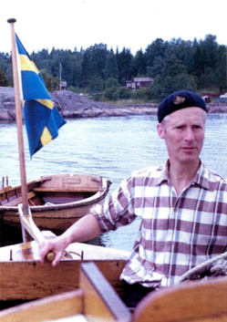 |
| Ed Cushing | Jock McAndrews | Magnus Fries |
Herb sought advice from Johs Iversen, who was on leave at Yale University in 1956, about which European palynologist to invite to Minnesota and help develop the pollen lab and train and advise talented graduate students such as Ed Cushing and Jock McAndrews. Iversen recommended Magnus Fries (1917–1987) from Uppsala, as an ideal teacher, a meticulous pollen analyst, hard-working, and a kind and very likable person. Magnus came from a distinguished lineage of Swedish botanists including the mycologist Elias Fries, the lichenologist Thore M. Fries, and the taxonomist Robert Fries (Santesson 1987). Magnus was the leading Quaternary pollen analyst in Sweden in the 1950s. He defended his doctoral thesis in 1951 (Fries 1951) on the vegetational history of Västergötland in southern Sweden. He published several important papers about Swedish vegetational history (e.g. Fries 1962a, 1965, 1980). Whilst in Minnesota in 1958, he helped to develop the pollen lab (including getting a second Leitz microscope), to build up its modern pollen reference collections, and to teach and advise Ed Cushing and Jock McAndrews, as well as three MSc students – Harvey Patten, Thomas (Tom) C. Winter (1936–2010), and Anne Knight – and two PhD students – Louis (Lou) J. Maher and Robert (Bob) C. Bright (1928–1995).
| 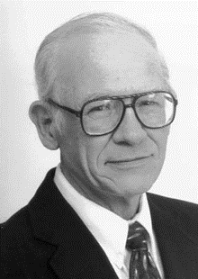 | 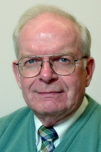 | 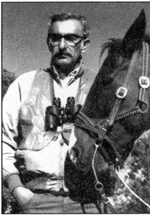 |
| Tom Winter | Lou Maher | Bob Bright |
Magnus also did a detailed pollen-stratigraphical study at Weber Lake, north-east Minnesota (Fries 1962b; Eisenack & Fries 1965) as well as a study of a late Wisconsin buried peat at North Branch on the Anoka sandplain just north of the Twin Cities (Fries et al. 1961). The influence of Magnus on the laboratory and on its students was immense. He shared the same work-ethic as Herb and the students – hard work, long hours, natural curiosity, generosity, and determination. He is warmly acknowledged in all the doctoral and MSc theses. Several major papers were derived from these theses including Winter (1962), Maher (1963), Wright et al. (1963), Cushing (1964), and McAndrews (1966). Magnus greatly enjoyed his year in Minnesota (Fries 1962c). I only met Magnus once, in May 1977 in Lund, and he was very keen to hear news of the LRC, the pollen lab, Herb, Ed, Jock, and others. Magnus became Assistant Professor in the Department of Forest Botany in the Royal College of Forestry in the early 1960s. A new position was created for him in July 1978 in the Section of Palaeobotany of the Swedish Museum of Natural History to provide scientific leadership for Index Holmiensis – a project started by Hans Tralau (1932–1977) to create a world index of plant distribution maps. Ten volumes have been published to date covering pteridophytes, gymnosperms, monocotyledons, and dicotyledons to the letter S. Volume 10 (dicotyledons Q–S) with data about maps for 19,798 taxa was published in 2007. Magnus also played an important role in the completion of the mammoth three-volume Atlas of North European Vascular Plants (Hultén & Fries 1986).
Magnus Fries was, in many ways, the ‘father’ of pollen analysis in Minnesota as he did so much to develop the pollen lab, to train and advise many talented graduate students in the field and the lab, and to explore the vegetational history of north-east Minnesota. He suggested that Ed Cushing apply for a Fulbright Fellowship to work in what was then the Geological Survey of Denmark. Ed worked there in 1960–61 and greatly benefitted from daily contact with Johs Iversen and Svend Andersen (Cushing 1963). Ed imported into the pollen lab much of what he had learnt whilst in Copenhagen and set the very high laboratory and analytical procedures and intellectual rigour that quickly became the norm in the Minnesota pollen lab.
Magnus was followed by Saskia (‘Kiek’) Jelgersma (1929–2012), a Quaternary geologist from The Netherlands. Kiek’s primary research for her doctoral thesis in 1961 was on Holocene sea-level changes in The Netherlands. This work involved pollen analysis, stratigraphy, archaeology, and radiocarbon dating. After her year (1959–60) in Minnesota she was appointed Senior Geologist in the Geological Survey of The Netherlands in Haarlem, a post she held until her retirement in 1995. Whilst in Minnesota she helped to develop further the pollen lab, to advise graduate students, and to study late-glacial deposits at Madelia in south-central Minnesota (Jelgersma 1962) and Kotiranta Lake, north-eastern Minnesota (Wright & Watts 1969).
The next visiting researcher to the pollen lab was also from The Netherlands, Willem van Zeist (1924–2016) from the Biologisch-Archaeologisch Institutut, University of Groningen. Willem’s major research interests were in archaeological botany and palaeo-ethnobotany and his expertise included pollen analysis, macroscopic plant remains, and charcoal remains. Besides working in The Netherlands and in France, his major research areas were the Near East and the eastern Mediterranean. As well as helping in the pollen lab and interacting with graduate students, Willem’s main research was to study the pollen stratigraphy of cores I-13 and I-12 from Lake Zeribar in the Zagros Mountains of south-western Iran (van Zeist & Wright 1963). Herb had obtained these cores in 1960 with Richard (‘Red’) Watson, Anne Bent, and Richard (‘Dick’) Wright (Wright 2008). These cores extended to about 17,000 years before present and provided the incentive for further work at Zeribar and the first hints of the importance of Late Pleistocene/early Holocene climate changes from dry and cold to moist and temperate (Wright 1966) on the origins of agriculture (Wright 1964). Herb and Willem returned to Zeribar in 1963 with Robert (‘Bob’) and Roberta (‘Bobbi’) Megard and Dick Wright. Results for the pollen, plant macrofossil, and cladoceran stratigraphies of the 1963 cores were published by van Zeist (1967), Wasylikowa (1967), and Megard (1967). In addition, 72 modern surface samples were collected along transects crossing the major vegetation belts. The pollen in these samples were analysed by Jock McAndrews whilst a post-doctoral fellow at Groningen (Wright et al. 1967).
| 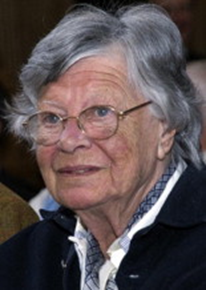 | 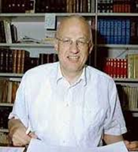 |
| Saskia Jelgersma | Willem van Zeist |
Lou Maher and Bob Bright followed Ed and Jock to be post-doctoral fellows in Europe, Lou in Cambridge and Bob in Uppsala, consolidating the strong and valuable trans-Atlantic connections that Herb and Magnus Fries initiated in 1958. These connections were continued with several LRC students becoming researchers in Europe for a year during the 1970s or 1980s (e.g. Sheri Fritz, Cathy Whitlock, Eric Grimm, Jim Clark, Brian Cumming, Heather Almquist, George Jacobson).
Lake Zeribar was visited again in 1970 by Herb along with Red Watson, Dick Wright, Krystyna Wasylikowa, and Kazimierz Wasylik (the latter two has also been visitors to the pollen lab). This expedition raised 40 m of sediment that extended to 48,000 years ago and provided a very detailed pollen stratigraphy (van Zeist & Bottema 1977; van Zeist 2008a, 2008b). Many palaeoecological analyses involving diatoms, macrofossils, Characeae, molluscs, ostracods, and stable-isotopes as well as pollen were done on the Zeribar cores, and all this multi-disciplinary work has been brought together by Krystyna Wasylikowa and Andrzej Witkowski in a monograph about Lake Zeribar dedicated to Herb (Wasylikowa & Witkowski 2008).
Finding sites suitable for pollen analysis in the Near East and the eastern Mediterranean is not easy and Willem van Zeist, Herb, and others had many field adventures together in Iran, Israel, Syria, Jordan, Turkey, and Greece searching for promising sites. Perhaps the most notable adventure was when Herb who was driving a land-rover with a wide, ready-assembled coring raft on the roof-rack tried to drive along a road in a Greek village that was narrower than the coring raft and demolished a balcony off the side of a house!
The next two European visitors to the pollen lab both came in late 1961 and early 1962. William (‘Bill’) Watts (1930–2010) from Ireland came for a year in late December 1961 with his wife Gerry and their two young boys Niall and Michael (Watts 2008). C Roel Janssen (1930–2015) came with his wife Nini early in 1962 and stayed for just over two years. Both Bill and Roel contributed greatly to the laboratory and the international camaraderie that was developing in Herb’s group. They returned many times to Minnesota: Bill worked with Herb for nearly 40 years and Roel worked with Herb for over 30 years.
| 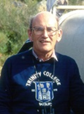 | 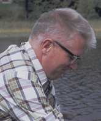 |
| Bill Watts | Roel Janssen |
Roel’s doctoral thesis was on the Holocene vegetational history of the Limburg area in the south-eastern Netherlands (Janssen 1960). By studying basins of different sizes, Roel became aware of the differences in pollen assemblages from small and medium-sized basins and began to formulate his ideas about local, extra-local, regional, and extra-regional pollen deposition. His first scientific paper (Janssen 1959) was on ‘Alnus as a disturbing factor in pollen diagrams’ and Roel suggested that different pollen calculation sums were appropriate for different types and sizes of sites. By coincidence, Herb and his student Harvey Patten were thinking about a related problem – the massive local over-representation of pollen of prairie draw-down plants in the Chenopodiaceae at Lake Carlson (Wright & Patten 1963). When Herb discussed with Roel the idea of Roel coming to Minnesota, Roel enthusiastically told Herb all about Alnus, local pollen deposition, etc. whilst Herb just listened. After an hour, Herb said ‘when are you coming to Minnesota?’.
As recounted in the biography of Herb, Roel and Herb had both been involved in Operations Manna and Chowhound (van der Zee 1978) during the ‘Hongervinter’ (hunger winter) of 1944–45 in The Netherlands. Herb was then a Major in the 95th Bombardment Group of the Army Air Corps. He made vital air-drops of sacks of food urgently needed by the starving Dutch into marked fields during Operations Manna and Chowhound. Roel was a young Dutch boy from near Arnhem, who collected some of the sacks dropped by Herb’s squadron.
Roel primarily worked in Minnesota on modern deposition along vegetational transects to assess local, extra-local, and regional pollen deposition (Janssen 1966, 1967a, 1967b, 1973, 1984). He also analysed in considerable taxonomic and stratigraphical detail the pollen stratigraphy of Stevens Pond, a small Typha swamp in north-western Minnesota (Janssen 1967c) near where Jock McAndrews (1966) had studied regional pollen stratigraphies from medium-sized lakes. He also worked (Janssen 1968) on the vegetational history of Myrtle Lake, a lake within the vast Myrtle Lake peatland complex of northern Minnesota and a site infamous for an unsuccessful but very adventurous coring trip in 1970. Besides work in Minnesota, Roel was very active with his Utrecht students studying vegetational history of the Vosges Mountains and the Forez in France and of the Serra da Estrêla in western Portugal.
Bill Watts came first to Minnesota at Herb’s invitation to develop quantitative stratigraphic plant-macrofossil analysis on one of the lab’s pioneering palynological studies at Kirchner Marsh (Winter 1962; Wright et al. 1963). Bill produced one of the first ever quantitative plant-macrofossil studies (Watts & Winter 1966). Bill made similar detailed studies in northern Minnesota (Wright & Watts 1969), South Dakota (Watts & Bright 1968), and the Nebraska Sand Hills (Watts & Wright 1966). He also provided the first synthesis of late-glacial plant-macrofossil studies in Minnesota (Watts 1967).
Bill’s main interest in working in the USA came from his previous work on Irish Tertiary floras and his fascination with historical plant geography and questions of tree survival in glacial stages. At the end of his first Minnesotan visit, Bill and Jock McAndrews visited Mud Lake, north-central Florida and after various coring adventures, they raised a 1360 cm sediment sequence that extended into the last interglacial (Sangamon) and the previous Illinoian glacial or even earlier (Watts 1969). Bill then devoted much of his research time (he was also very active in teaching and administration at Trinity College Dublin, being its Provost 1981–91 and chair of various leading Irish conservation and hospital boards (Watts 2008)) to the vegetational history of the south-eastern states, especially Georgia and Florida (Watts 1970, 1971, 1973, 1975a, 1975b, 1980, 1983; Watts & Stuiver 1980; Watts et al. 1992; Grimm et al. 1993; Watts & Hansen 1994; Hansen et al. 2001), central Appalachia and the New Jersey coastal plain (Watts 1979), and Mexico (Watts & Bradbury 1982).
One of Herb’s MSc students Richard (‘Dick’) Baker who had started working on the pollen stratigraphy at Spider Creek, a late-glacial site north-west of Duluth, took up plant-macrofossil analysis under Bill’s tutelage (Baker 1965). Dick went on to make important plant-macrofossil studies in the mid-West (Baker et al. 1989, 1996, 2002, 2009) and Yellowstone (Baker 1976). Bob Bright, a former doctoral student of Herb’s also took up plant-macrofossil analysis and produced detailed Holocene pollen and macrofossil stratigraphies from Swan Lake in south-east Idaho (Bright 1966). Bill Watts influenced other people in macrofossils, including Hilary Birks in 1970 (Birks 2016) and Cathy Whitlock (Barnosky 1984, 1985a, 1985b).
The pollen lab was greatly strengthened by Barbara Hansen joining it in 1961 after completing her MSc in the Botany Department. She worked with Herb, Ed, Bill Watts, and other colleagues on a very wide range of palynological projects on several continents (John Birks 2016). She became one of the most versatile and experienced palynologists in the US. She was honoured in 2001 by being awarded an Outstanding Achievement Award from the University of Minnesota.

By the time the next European palaeoecologist (Kerstin Griffin) came in 1963 to work with Herb, the pollen lab was now part of the Limnological Research Center (LRC). The LRC was quickly expanding its research activities into neolimnology with faculty members Joe Shapiro, Alan Brook, Bob Megard, and Eville Gorham and soon into palaeolimnology with the import of experienced European diatomists such as Maj-Britt Florin in 1964, Kazik Wasylik in 1965, and Elizabeth Haworth in 1966.
As the pollen lab and its collections continued to expand, a manager was appointed in 1965. Jean Waddington from England ran the lab very efficiently and completed various projects with Herb, Ed, Platt Bradbury, and others (e.g. Bradbury & Waddington 1973; Waddington & Wright 1974). She did a MSc with Ed on the pollen stratigraphy of a lake in the Big Woods of Minnesota (Waddington 1969). She left the LRC in 1974 and her place as lab manager was taken by Linda Shane. Linda obtained her PhD from Kent State University (Shane 1976, 1987, 1989). She ran the lab excellently until 2002 when she became Manager of the LRC Lacustrine Core Laboratory (LacCore). She also edited with Ed Cushing the wide-ranging symposium volume Quaternary Landscapes (Shane and Cushing 1991) to honour Herb on the occasion of his formal retirement from the University of Minnesota in 1988. He did not actually retire from field work until about 2007 and from science, scientific writing and editing until about 2014.
Kerstin Griffin came from Oslo in 1963 and worked in the LRC from 1963 to 1968. She was the first international PhD student to work in the LRC and she was awarded her University of Minnesota PhD in 1973 based on her thesis on Paleoecological aspects of Red Lake Peatland (Griffin 1975, 1977). Kerstin’s work on the palaeoecology and development of the Red Lake peatland, a vast patterned fen with complex surface patterns (Wright et al. 1992), was one of the first studies that Herb and his LRC colleagues made on the patterned peatlands of Minnesota and elsewhere in North America and Scandinavia.
| 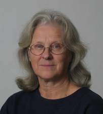 | 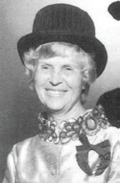 |
| Kerstin Griffin | Maj-Britt Florin |
The next long-term visitor to the LRC was also Scandinavian – Maj-Britt Florin (1905–1993) – who worked with Herb in 1964–65. She came from Uppsala in Sweden to work on late-glacial diatom assemblages in the lowermost sediments including the basal ‘trash layer’. Maj-Britt was part of the strong Swedish tradition in the LRC that started with Magnus Fries and was continued by Svante Björck (1981–82 and later) and Ingemar Renberg (1991). The LRC was, as always, short of good microscopes and Herb in his invitation to Maj-Britt to come and work in the LRC asked her to bring her own microscope! Maj-Britt was one of the world’s leading diatomists and did important work on diatoms in relation to sea-level changes in eastern Sweden as well as detailed pollen analytical studies (Hasle & Miller 1994). Maj-Britt was one of the young students on the famous 1933 Baltic Course on pollen analysis taught by Lennart von Post (Fægri 1981). At this course she met other young Scandinavian palaeoecologists who went on to be major figures in pollen analysis and palaeoecology, notably Knut Fægri and Johs Iversen. Maj-Britt’s work in Minnesota (Florin & Wright 1969, Florin 1970) was on the late-glacial diatoms at Kirchner Marsh. She showed that the basal ‘trash layer’ containing wood and other terrestrial coarse plant material and diatoms of soil, moss, and shallow ponds, represented the ground-layer of a spruce forest growing on buried ice. In light of these findings as well as work by one of Herb’s geology graduates, Vern Rampton (LRC 1964–69) in the St Elias Mountains in the Yukon Territory (Rampton 1970, 1971, 1978), Herb planned a multi-disciplinary study in 1971 on the Klutlan Glacier in the Yukon to examine and study modern analogues for ice-cored areas in late-glacial Minnesota (Wright 1980).
The next European visitors, Krystyna Wasylikowa and her husband Kazimierz (‘Kazik’) Wasylik (1925–2000) came from Kraków in Poland in 1964 and 1965 (Kazik). Krystyna’s expertise is in plant macrofossils whereas Kazik was a diatomist. Krystyna recalls (pers. comm. 2015) “My first meeting with Herb is still very vivid in my memory. It was in 1961 during the INQUA Congress in Warsaw. I presented a paper about an interesting site where Bølling and Allerød peats were separated by a dune sand. After the session a man came to me and said (or rather mumbled) ‘I am Professor Wright from Minnesota, would you like to come to us with your husband to work at the university?’ And so it started. Our wonderful time in Minnesota, the travel to Iran (with Dick Wright), work on the Zeribar cores, and Herb’s several travels to Poland. He was quite a personality. I think I can say that we were friends in spite of the distance and our rare meetings.” Krystyna worked on the plant macrofossils in the various cores from Lake Zeribar and Kazik worked on the diatoms (Wasylikowa 1967, 2008; Wasylikowa et al. 2006, 2008; Wasylikowa & Witkowski 2008; Witkowski et al. 2008). She also worked on late-glacial pollen and macrofossils at Blackhoof, a late-glacial site in north-eastern Minnesota (Wasylikowa & Wright 1970).
| 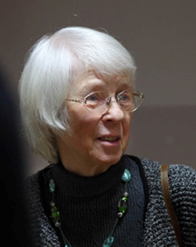 | 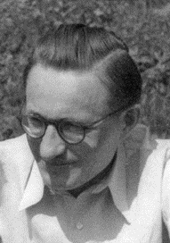 |
| Krystyna Wasylikowa | Kazik Wasylik |
The diatom tradition started by Maj-Britt and Kazik was continued by the next LRC visitor, Elizabeth (‘Liz’) Haworth from the Freshwater Biological Association at Ambleside in the English Lake District. Liz worked in the LRC, mainly with Bob Bright during 1966–67. Liz extended the palaeoecological study of Watts and Bright (1968) at Pickerel Lake, South Dakota that involved pollen, molluscs, and plant macrofossils. Liz made a detailed diagram stratigraphy that showed major changes in diatom composition with brackish-water diatoms occurring during the mid-Holocene period of prairie expansion and increased regional aridity (Haworth 1972).
| 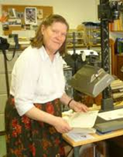 | 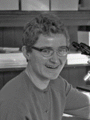 | 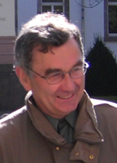 |
| Liz Haworth | Johanna Grüger | Eberhard Grüger |
Johanna Grüger (LRC 1967–69) and her husband Eberhard Grüger (LRC 1968–69) came from Hans-Jürgen Beug’s laboratory in Göttingen to work with Herb on potentially old sediments from Kansas (Johanna) and Illinois (Eberhard) (Grüger E 1972a, 1972b; Grüger J 1973). They came as post-doctoral fellows and both did combined detailed pollen and plant macrofossil studies on sequences extending as far back as the late Illinoian stage prior to the Sangamonian (last) interglacial. Johanna had previously worked in the Lake Garda area of the southern Alps (Grüger J 1968) and Eberhard had worked on Lower Pleistocene (Cromerian complex) sequences in central Germany (Grüger E 1968). Johanna also used her southern European palynological experience whilst in the LRC to analyse some sediment samples from Lake Voulkaria, north-western Greece collected by Herb in 1966 and 1967 as part of the Minnesota Messenia Expedition that aimed to reconstruct the Bronze Age environment of Messenia (Wright 1972; Wright & Grüger 2010).
1969 was the first year since the pollen laboratory and LRC were founded when there was no ‘resident’ European palaeoecologist working in Room 218 in Pillsbury Hall. Bill Watts made one short visit, but otherwise the LRC expanded in 1968–69 with three North American post-doctoral researchers (Mel Whiteside, David P Adam, J Platt Bradbury) and several PhD students (among others Al Swain, Paul Glaser, Chris Synerholm) and MSc (among others Alan Craig, Gail Garrison, Donna Amundson). Alan Craig was the first international MSc student to work with Herb in the LRC. Alan came from Trinity College Dublin where he had been taught botany and palaeoecology by Bill Watts. Alan, as part of his TCD BA, had done a pollen study of two sites in the Shenandoah Valley in Virginia (Craig 1969). For his Minnesota MSc, Alan produced a complete Holocene pollen stratigraphy from the annually-laminated sediments of Lake of the Clouds in north-east Minnesota (Craig 1972), a site that Herb and his friend Miron Heinselman had discovered in their quest to derive long-term fire histories using charcoal preserved in lake sediments. Alan then returned to Dublin where he did his PhD on late-glacial vegetation history of south-east Ireland (Craig 1978). He then moved into nature conservation in Ireland and worked for the National Parks and Monuments branch of the Office of Public Works. He helped Bill Watts (Watts 2008) to persuade the Office of Public Works to create the Glenveagh, Connemara, and Burren National Parks. Hilary and John Birks worked as post-doctoral fellows in the LRC in 1970 and, in John’s case, later on shorter visits up to 1982. By 1970 the days of European palaeoecological pioneers were largely over and the LRC expanded its research in aquatic ecology, neolimnology, and palaeoecology with many post-doctoral fellows and PhD and MSc students and a few European visitors such as Rick Battarbee (UK, 1981–82), Svante Björck (Sweden, 1981–82), and Ingemar Renberg (Sweden, 1991). Bill Watts and Roel Janssen continued to visit the LRC for short periods. Short-term (1–2 months or one semester) palaeoecological foreign visitors included RG West (UK, 1960), Jan Mangerud (Norway, 1972), Norio Fuji (Japan, 1975), and Kevin Edwards (UK, 1983).
On reflection, Herb’s policy of inviting European palaeoecological pioneers was a brilliant idea. It was highly successful, not only in the ground-breaking research the ‘pioneers’ did, but also in the stimulation, expertise, friendships, and skills that they brought and contributed to the development of the pollen laboratory and later the LRC through its many graduate students and researchers, many of whom have gone to become leading palaeoecologists. It was a most effective and productive policy and one which the European pioneers greatly enjoyed. All benefitted intellectually and socially from their Minnesotan years as well as learning much about field-craft with Herb!
Acknowledgements
Photo credits: Magnus Fries, courtesy of Björn E Berglund; Ed Cushing, courtesy of University of Minnesota; Jock McAndrews courtesy of Royal Ontario Museum and University of Toronto; Tom Winter, Lou Maher, and Bob Bright , courtesy of Jim Almendinger; Saskia Jelgersma, courtesy of Wim Westerhoff & Sytze van Heteren; Bill Watts by Fraser Mitchell; Roel Janssen by John Birks; LRC lab, courtesy of Bob Megard and Paul Glaser; Kerstin Griffin, courtesy of Lisbeth Prosch-Danielsen; Maj-Britt Florin by Maja Florin; Krystyna Wasylikowa by Adam Walanus; Kazik Wasylik, courtesy of Jim Almendinger; Liz Haworth, courtesy of Fritsch Algal Collection; Johanna Grüger by Eberhard Grüger; Eberhard Grüger, courtesy of Thomas Giesecke.
I am indebted to many of the European pioneers for sharing their experiences with me, to Bill Watts for encouraging Hilary and me to go to Minnesota in 1970, to Emi Ito for information, and to Cathy Jenks for her care in preparing the text.
References
Baker RG. (1965) Late-glacial pollen and plant macrofossils from Spider Creek, southern St Louis county, Minnesota. Geological Society of America Bulletin 76:601-610.
Baker RG. (1976) Late Quaternary vegetation history of the Yellowstone Lake Basin. US Geological Survey Professional Paper 729-E:1-48.
Baker RG, Sullivan AE, Hallberg GR, Horton DG. (1989) Vegetational changes in western Illinois during the onset of Late Wisconsinan Glaciation. Ecology 70:1363-1376.
Baker RG, Bettis EA, Schwert DP, Horton DG, Chumbley CA, González LA, Reagan MK. (1996) Holocene paleoenvironments of northern Iowa. Ecological Monographs 66:203-224.
Baker RG, Bettis EA, González LA, Denniston RF, Strickland LE, Krieg JR. (2002) Holocene paleoenviornments in southeastern Minnesota - chasing the prairie-forest ecotone. Palaeogeography Palaeoclimatology Palaeoecology 177:103-122.
Baker RG, Bettis EA, Mandel RD, Dorale JA, Fredlund GG. (2009) Mid-Wisconsinan environments on the western Great Plains. Quaternary Science Reviews 28:873-889.
Barnosky CW. (1984) Late Pleistocene and early Holocene environmental history of southwestern Washington State, USA. Canadian Journal of Earth Sciences 21:619-629.
Barnosky CW. (1985a) Late Quaternary vegetation in the southwestern Columbia Basin, Washington. Quaternary Research 23:109-122.
Barnosky CW. (1985b) Late Quaternary vegetation near Battle Ground Lake, southern Puget Trough, Waashington. Geological Society of America Bulletin 96: 263-271.
Birks HH. (2016) My life with macrofossils. Journal of Paleolimnology 10.1007/s10933-015-9869-8.
Bradbury JP, Waddington JCB. (1973) The impact of European settlement on Shagawa Lake, northeastern Minnesota. In: Birks HJB, West RG (eds), Quaternary Plant Ecology. Blackwell Scientific Publications, Oxford, pp. 289-307.
Bright RC. (1966) Pollen and seed stratigraphy of Swan Lake, southeastern Idaho: It’s relation to regional vegetational history and to Lake Bonneville history. Tebiwa 9:1-47.
Craig AJ. (1969) Vegetational history of the Shenandoah Valley, Virginia. Geological Society of America Special Paper 123:283-296.
Craig AJ. (1972) Pollen influx to laminated sediments: a pollen diagram from northeastern Minnesota. Ecology 53:46-57.
Craig AJ. (1978) Pollen percentage and influx analyses in south-east Ireland: A contribution to the ecological history of the late-glacial period. Journal of Ecology 66:297-324.
Cushing EJ. (1963) Late-Wisconsin pollen stratigraphy in east-central Minnesota. PhD thesis, University of Minnesota.
Cushing EJ. (1964) Redeposited pollen in late-Wisconsin pollen spectra from east-central Minnesota. American Journal of Science 262:1075-1088.
Deevey ES. (1949) Biogeography of the Pleistocene. Geological Society of America Bulletin 60:1315-1416.
Eisenack A, Fries M. (1965) Peridinium limbatum (Stokes) verglichen mit der Tertiären Deflandrea phosphoritica Eisenack. Geologiska Föreningens I Stockholm Förhandlingar 87:239-248.
Fægri K. (1981) Some pages of the history of pollen analysis. Striae 14:42-47.
Florin M-B. (1970) The late-glacial diatoms of Kirchner Marsh, south-eastern Minnesota. Nova Hedwigia 31:667-755.
Florin M-B, Wright HE. (1969) Diatom evidence for the persistence of stagnant glacial ice in Minnesota. Geological Society of America Bulletin 80:695-704.
Fries M. (1951) Pollenanalytiska vittnesbörd om senkvartär vegetationsutveckling, särskilt skogshistoria, i nordvästra Götaland. Acta Phytogeographica Suecica 29:1-220.
Fries M. (1962a) Studies of the sediments and the vegetational history in the Ösbysjö Basin north of Stockholm. Oikos 13:76-96.
Fries M. (1962b) Pollen profiles of Late Pleistocene and Recent sediments from Weber Lake, Minnesota. Ecology 43:295-308.
Fries M. (1962c) Ett forskningsprojekt i Minnesotas senkvartär. Särtryck ur Svensk Naturvetenskap 19:288-295.
Fries M. (1965) Outlines of the late-glacial and post-glacial vegetational and climatic history of Sweden, illustrated by three generalized pollen diagrams. In: Wright HE, Frey DG (eds), International Studies on the Quaternary. International Association for Quaternary Research, Boulder, CO, pp. 55-64.
Fries M. (1980) Ragvaldmossen. Acta Phytogeographica Suecica 68:73-79.
Fries M, Wright HE, Rubin M. (1961) A late Wisconsin buried peat at North Branch, Minnesota. American Journal of Science 259:679-693.
Griffin KO. (1975) Vegetation studies and modern pollen spectra from the Red Lake peatland, northern Minnesota. Ecology 56:531-546.
Griffin KO. (1977) Paleoecological asepcts of the Red Lake peatland, northern Minnesota. Canadian Journal of Botany 55:172-192.
Grimm EC, Jacobson GL, Watts WA, Hansen BCS, Maasch KA. (1993) A 50,000-year record of climate oscillations from Florida and its temporal correlation with the Heinrich events. Science 261:198-200.
Grüger E. (1968) Vegetationsgeshichtliche Untersuchungen an cromerzeitlichen Ablagerungen im nördlichen Randgebiet der deutschen Mittelgebirge. Eiszeitalter und Gegenwart 18:204-235.
Grüger E. (1972a) Late Quaternary vegetation development in south-central Illinois. Quaternary Research 2:217-231.
Grüger E. (1972b) Pollen and seed studies of Wisconsinan vegetation in Illinois, USA. Geological Society of America Bulletin 83:2715-2734.
Grüger J. (1968) Untersuchungen zur spätglazialen und frühpostglazialen Vegetationsentwicklung der Südalpen im Umkreis des Gardasees. Botanische Jahrbücher aus dem Systematisch-Geobotanischen Institut der Universität Göttingen 88:163-199
Grüger J. (1973) Studies on the Late Quaternary vegetation history of northeastern Kansas. Geological Society of America Bulletin 84:239-250.
Hansen BCS, Grimm EC, Watts WA. (2001) Palynology of the Peace Creek site, Polk County, Florida. Geological Society of America Bulletin 113:682-692.
Hasle FR, Miller U. (1994) Obituary: Professor Maj-Britt Florin (1905–1993). Diatom Research 9:481-484.
Haworth EY. (1972) Diatom succession in a core from Pickerel Lake, northeastern South Dakota. Geological Society of America Bulletin 83:157-172.
Hultén E, Fries M. (1986) Atlas of North European Vascular Plants, North of the Tropic of Cancer. (Volumes I–III) Koeltz Scientific Books, Königstein, Germany, 1172 pp.
Janssen CR. (1959) Alnus as a disturbing factor in pollen diagrams. Acta Botanica Nederlandica 8:55-58.
Janssen CR. (1960) On the late-glacial and post-glacial vegetation of south Limburg (Netherlands). North-Holland Publishing Company, Amsterdam, 112 pp.
Janssen CR. (1966) Recent pollen spectra from the deciduous and coniferous-deciduous forests of northeastern Minnesota: A study in pollen dispersal. Ecology 47:804-825.
Janssen CR. (1967a) A comparison between the recent regional pollen rain and the subrecent vegetation in four major vegetation types in Minnesota (USA). Review of Palaeobotany and Palynology 2:331-342.
Janssen CR. (1967b) A floristic study of forests and bog vegetation, northwestern Minnesota. Ecology 48:751-765.
Janssen CR. (1967c) Stevens Pond - a postglacial pollen diagram from a small Typha swamp in Northwestern Minnesota interpreted from pollen indicators and surface samples. Ecological Monographs 37:145-.
Janssen CR. (1968) Myrtle Lake: a late- and post-glacial pollen diagram from northern Minnesota. Canadian Journal of Botany 46:1397-1408.
Janssen CR. (1973) Local and regional pollen deposition. In: Birks HJB, West RG (eds), Quaternary Plant Ecology. Blackwell Scientific Publications, Oxford, pp. 31-42.
Janssen CR. (1984) Modern pollen assemblages and vegetation in the Myrtle Lake Peatland, Minnesota. Ecological Monographs 54:213-252.
Jelgersma S. (1962) A late-glacial pollen diagram from Madelia, south-central Minnesota. American Journal of Science 260:522-529.
Maher LJ. (1963) Pollen analyses of surface materials from the San Juan Mountains, Colorado. Geological Society of America Bulletin 74:1485-1504.
McAndrews JH. (1966) Postglacial history of prairie, savanna, and forest in northwestern Minnesota. Memoirs of the Torrey Botanical Club 22:1-72.
Megard RO. (1967) Late-Quaternary Cladocera of Lake Zeribar, western Iran. Ecology 48:179-189.
Rampton VN. (1970) Neoglacial fluctuations of the Natazhat and Klutlan glaciers, Yukon Territory, Canada. Canadian Journal of Earth Sciences 7:1236-1263.
Rampton VN. (1971) Late Quaternary vegetational and climatic history of the Snag-Klutlan area, southwestern Yukon Territory, Canada. Geological Society of America Bulletin 82:959-978.
Rampton VN. (1978) Holocene glacial and tree-line fluctuations in the White River Valley and Skolai Pass, Alaska and Yukon Territory: a discussion. Quaternary Research 10:130-134.
Santesson R. (1987) Magnus Fries död. Framstående botanist med historiska anor. Svensk Dagbladet 5 novembre 1987.
Shane LCK. (1976) Late-glacial and post-glacial palynology and chronology of Darke County, west-central Ohio. PhD Thesis, Kent State University.
Shane LCK. (1987) Late-glacial vegetational and climatic history of the Allegheny Plateau and the Till Plains of Ohio and Indiana, USA. Boreas 16:1-20.
Shane LCK. (1989) Changing palynological methods and their role in three successive interpretations of the late-glacial environments at Bucyrus Bog, Ohio, USA. Boreas 18:297-309.
Shane LCK, Cushing EJ (eds). (1991b) Quaternary Landscapes. University of Minnesota Press, Minneapolis.
van der Zee HA. (1978) The Hunger Winter: Occupied Holland 1944–45. University of Nebraska Press, Lincoln, 304 pp.
van Zeist W. (1967) Late Quaternary vegetation history of western Iran. Review of Palaeobotany and Palynology 2:301-311.
van Zeist W. (2008a). Late Pleistocene and Holocene vegetation at Zeribar. In: Wasylikowa K, Witkowski A (eds), The Palaeoecology of Lake Zeribar and Surrounding Areas, Western Iran, During the Last 48,000 Years. A.R.G. Gantner Verlag K.G., Ruggell, pp. 53-104.
van Zeist W. (2008b). Outline of the vegetation of western Iran. In: Wasylikowa K, Witkowski A (eds), The Palaeoecology of Lake Zeribar and Surrounding Areas, Western Iran, During the Last 48,000 Years. A.R.G. Gantner Verlag K.G., Ruggell, pp. 23-30.
van Zeist W, Bottema S. (1977) Palynological investigations in western Iran. Palaeohistoria 19:19-85.
van Zeist W, Wright HE. (1963) Preliminary pollen studies of Lake Zeribar, Zagros Mountains, southwestern Iran. Science 140:65-67.
Waddington JCB. (1969) A stratigraphical record of the pollen influx to a lake in the Big Woods of Minnesota. Geological Society of America Special Paper 123:263-282.
Waddington JCB, Wright HE. (1974) Late-Quaternary vegetational changes on the east side of Yellowstone Park, Wyoming. Quaternary Research 4:175-184.
Wasylikowa K. (1967) Late Quaternary plant macrofossils from Lake Zeribar, western Iran. Review of Palaeobotany and Palynology 2:313-318.
Wasylikowa K. (2008) Palaeoecology of Lake Zeribar in the Late Pleistocene and Holocene reconstructed from the flora of aquatic and marsh plants. In: Wasylikowa K, Witkowski A (eds), The Palaeoecology of Lake Zeribar and Surrounding Areas, Western Iran, During the Last 48,000 Years. A.R.G. Gantner Verlag K.G., Ruggell, pp. 105-158.
Wasylikowa K, Witkowski A (eds). (2008) The Palaeoecology of Lake Zeribar and Surrounding Areas, Western Iran, During the Last 48,000 Years. A.R.G. Gantner Verlag K.G., Ruggell, 376 pp.
Wasylikowa K, Wright HE. (1970) Late-glacial plant succession on an abandoned drainageway, northwastern Minnesota, USA. Acta Palaeobotanica 2:23-43.
Wasylikowa K, Witkowski A, Walanus A, Hutorowicz A, Alexandrowicz SW, Langer JJ. (2006) Palaeolimnology of Lake Zeribar, Iran, and its climatic implications. Quaternary Research 66:477-493.
Wasylikowa K, van Zeist W, Wright HE, Stevens LR, Witkowski A, Walanus A, Hutorowicz A, Alexandrowicz SW, Langer JJ. (2008) The Lake Zeribar palaeoecology: a synthesis. In: Wasylikowa K, Witkowski A (eds), The Palaeoecology of Lake Zeribar and Surrounding Areas, Western Iran, During the Last 48,000 Years. A.R.G. Gantner Verlag K.G., Ruggell, pp. 303-322.
Watts WA. (1967) Late-glacial plant macrofossils from Minnesota. In: Cushing EJ, Wright HE (eds), Quaternary Palaeoecology. Yale University Press, New Haven, pp. 89-97.
Watts WA. (1969) A pollen diagram from Mud Lake, Marion County, north-central Florida. Geological Society of America Bulletin 80:631-642.
Watts WA. (1970) The full-glacial vegetation of northwestern Georgia. Ecology 51:17-33.
Watts WA. (1971) Postglacial and interglacial vegetation history of southern Georgia and central Florida. Ecology 52:676-690.
Watts WA. (1973) The vegetation record of a Mid-Wisconsin interstadial in northwest Georgia. Quaternary Research 3:357-368.
Watts WA. (1975a) A late Quaternary record of vegetation from Lake Annie, south-central Florida. Geology 3:344-346.
Watts WA. (1975b) Vegetation record for the last 20,000 years from a small marsh on Lookout Mountain, northwestern Georgia. Geological Society of America Bulletin 86:287-291.
Watts WA. (1979) Late Quaternary vegetation of central Appalachia and the New Jersey coastal plain. Ecological Monographs 49:427-469.
Watts WA. (1980) The Late Quaternary vegetation history of the southeastern United States. Annual Review of Ecology and Systematics 11:387-409.
Watts WA. (1983) Vegetation history of the eastern United States 25,000 to 10,000 years ago. In: Porter SC (ed), Late-Quaternary Environments of the United States in The Late Pleistocene. University of Minnesota Press, Minneapolis, pp. 294-310.
Watts WA. (2008) William Watts, Provost, Trinity College Dublin. A Memoir. Lilliput/Hinds, Dublin, 232 pp.
Watts WA, Bradbury JP. (1982) Paleoecological studies at Lake Patzcuaro on the west-central Mexican Plateau and at Chalco in the Basin of Mexico. Quaternary Research 17:56-70.
Watts WA, Bright RC. (1968) Pollen, seed, and mollusk analysis of a sediment core from Pickerel Lake, northeastern South Dakota. Geological Society of America Bulletin 79:855-876.
Watts WA, Hansen BCS. (1994) Pre-Holocene and Holocene pollen records of vegetation history from the Florida peninsula and their climatic interpretations. Palaeogeography Palaeoclimatology Palaeoecology 109:163-176.
Watts WA, Stuiver M. (1980) Late Wisconsin climate of northern Florida and the origin of species-rich deciduous forest. Science 210:325-326.
Watts WA, Winter TC. (1966) Plant macrofossils from Kirchner Marsh, Minnesota - A paleoecological study. Geological Society of America Bulletin 77:1339-1360.
Watts WA, Wright HE. (1966) Late-Wisconsin pollen and seed analysis from the Nebraska Sandhills. Ecology 47:202-210.
Watts WA, Hansen BCS, Grimm EC. (1992) Camel Lake - a 40000-yr record of vegetational and forest history from northwest Florida. Ecology 73:1056-1066.
Winter TC. (1962) Pollen sequence at Kirchner Marsh, Minesota. Science 138:526-528.
Witkowski A, Wasylik K, Lange-Bertalot H, Bąk M, Derwich K. (2008) Diatom paleolimnology of Lake Zeribar, Iram, in the Late Pleistocene and Holocene. In: Wasylikowa K and Witkowski A (eds), The Palaeoecology of Lake Zeribar and Surrounding Areas, Western Iran, During the last 48,000 Years. A.R.G. Gantner Verlag K.G., Ruggell, pp. 159-187.
Wright HE. (1964) Late Quaternary climates and Early Man in the mountains of Kurdistan. In: Report of the VIth International Quaternary Congress (Warsaw 1961). PWN, Łódź, pp. 341-348.
Wright HE. (1966) Stratigraphy of lake sediments and the precision of the paleoclimatic record. In: Sawyer JS (ed), World Climate from 8000 to 0 BC. Royal Meteorological Society, London, pp. 157-173.
Wright HE. (1969) Final report to the Hill Family Foundation. Limnological Research Center, University of Minnesota, 13 pp.
Wright HE. (1972) Vegetation history. In: McDonald WA and Rapp FR (eds), The Minnesota Messenia Expedition. Reconstructing a Bronze Age Regional Environment. University of Minnesota Press, Minneapolis, pp. 188-199.
Wright HE. (1980) Surge moraines of the Klutlan Glacier, Yukon Territory, Canada - Origin, wastage, vegetation succession, lake development, and application to the late-glacial of Minnesota. Quaternary Research 14:2-18.
Wright HE. (2008) History of research. In: Wasylikowa K and Witkowski A (eds), The Palaeoecology of Lake Zeribar and Surrounding Areas, Western Iran, During the last 48,000 Years. A.R.G. Gantner Verlag K.G., Ruggell, pp. 11-16.
Wright HE, Grüger J. (2010) Voulkaria 1966: the earliest palynological study of sediment from Lake Voulkaria, northwestern Greece. Unpublished manuscript.
Wright HE, Patten HL. (1963) The pollen sum. Pollen et Spores 5:445-450.
Wright HE, Watts WA. (1969) Glacial and vegetational history of northeastern Minnesota. Minnesota Geological Survey SP-11:1-59.
Wright HE, Winter TC, Patten HL. (1963) Two pollen diagrams from southeastern Minnesota: problems in the regional late-Glacial and Postglacial vegetational history. Geological Society of America Bulletin 74:1371-1396.
Wright HE, McAndrews JH, van Zeist W. (1967) Modern pollen rain in West Iran, and its relation to plant geography and Quaternary vegetational history. Journal of Ecology 55:415-443.
Wright HE, Coffin B, Aaseng NE. (1992) The Patterned Peatlands of Minnesota. University of Minnesota Press, Minneapolis, 327 pp.